A redesign of Gemini's iOS home screen: two stacks of suggestions in the empty space under the greeting, one for the time and place, one for recent work.
Gemini opens on a greeting and a text field. Nothing on it reflects what you did the last time you opened the app.
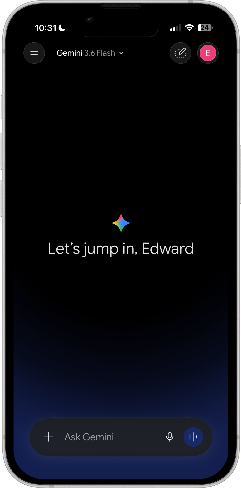
Between the model picker and the text field there is only the greeting. Nothing on the screen hints that Gemini can read a photo or write code.
I watched classmates open their AI assistants. Almost nobody read the suggested prompts; they typed the question they already had. No assistant publishes how often its suggestions get tapped, so I looked for the closest published studies.
In Nielsen Norman Group's 2025 tests of Amazon's shopping assistant, no participant clicked a suggested prompt without being told to. In a 2026 test in a large chat app, starters written from each user's past chats got 9.4% more clicks than generic ones.
In a five-day field study, developers engaged with 52% of an assistant's suggestions when they came right after a commit. Mid-task, after an edit was declined, they dismissed 62%. Opening an app is a moment between tasks.
Kuo et al., IUI 2026: 15 developers, 229 suggestions in a code editor.
Since August 2025, Gemini learns from past conversations by default, and Google describes the goal as a "personal, proactive" assistant. Yet to reopen a chat, you still scroll the side menu or search for it, and have to remember what it was called.
People do come back to chats: in 135,000 conversations donated by 300 ChatGPT users, a chat's first and last messages were 16.6 hours apart on average.
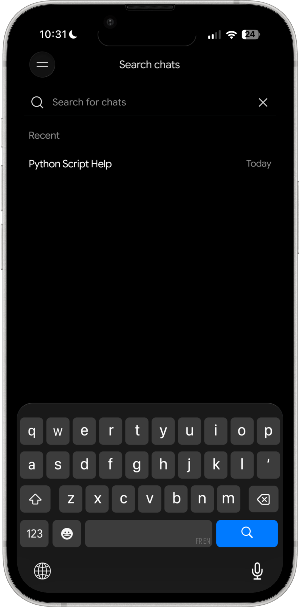
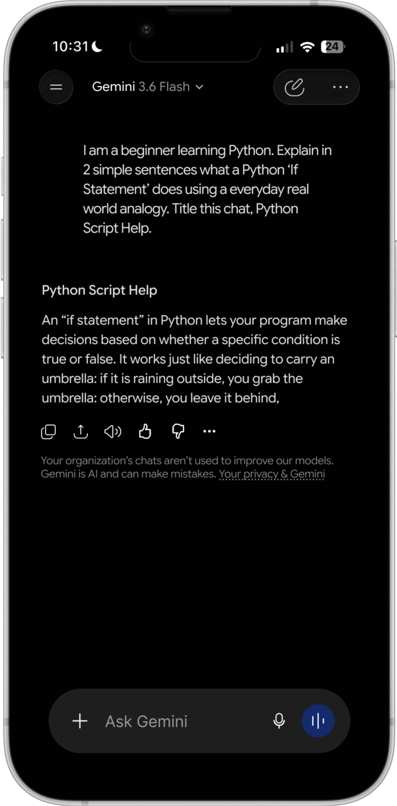
Some requests follow the clock: recipe requests to Claude are 2.3 times as frequent at 6 pm as on average. But across 37.5 million Copilot conversations, health was the top topic on phones at every hour. In a week-long field study of context-aware suggestions on phones, time and location mattered only in certain situations.
Suggestions get used when they come from a person's own chats and show up between tasks, as when the app opens. The time and place should add a card only when together they point to something specific, like dinner near campus at 6 pm.
Sources: Nielsen Norman Group on Amazon's Rufus, March 2025; Zheng et al., IceBreaker, ACL 2026 Industry Track; Kuo et al., Developer Interaction Patterns with Proactive AI, IUI 2026; 9to5Google on Gemini's personal context, August 2025; Karnam et al., Bowling with ChatGPT, ACM Web Conference 2026; Anthropic Economic Index, June 2026; Microsoft AI, Copilot Usage Report 2025; Chen et al., context-aware text entry on smartphones, CHI 2025. The 9.4% is a relative lift over generic starters, in a product the paper does not name; the 16.6 hours is an average pulled up by a few very long chats.
My first idea was a row of better prompts, but people skip prompts. So I asked what the screen should show, given what Gemini already knows.
From
"How might the home screen suggest better prompts?"
To
"How might the home screen use what Gemini already knows about you?"
The home screen's empty space holds suggestions from what Gemini already knows about you.
Gemini has no public design kit, so I rebuilt its screens from my own screenshots, drawing the icons, the status bar and both keyboards as vectors.
Then I documented its type, colour and components, and built the stacks from them.
Google Sans Flex for the app's own text, and SF Pro for what iOS draws, like the status bar and keyboard.
Blues from the glow behind the text field, blacks from the backgrounds, greys from secondary text.
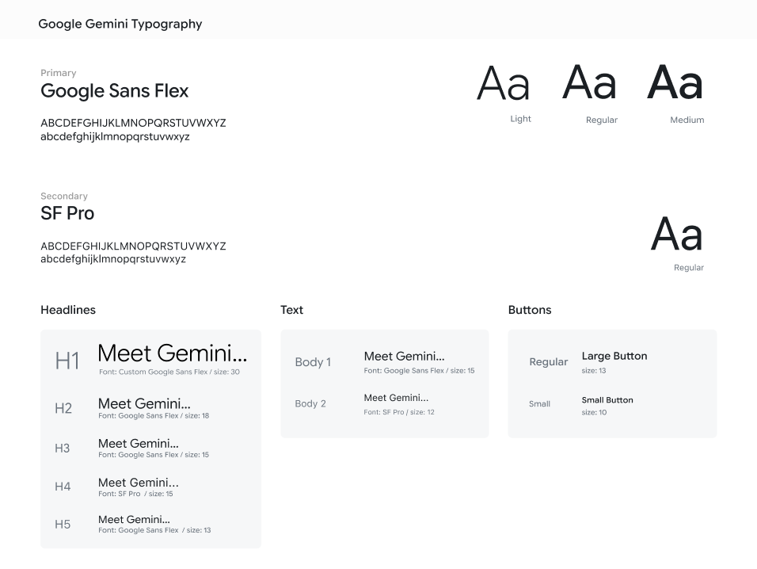
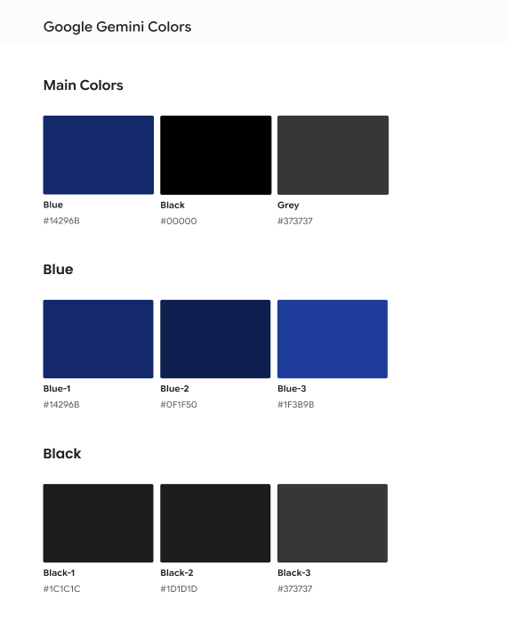
Every part of a chat is a component in one Figma file, so the stacks are built from the same parts as the app around them.
They sit just above the text field, so a card is only worth showing if it is more useful than the question you were about to type.
The cards are frosted glass, so the blue glow behind the text field shows through them. Solid cards would be easier to read but would look added on top of the app.
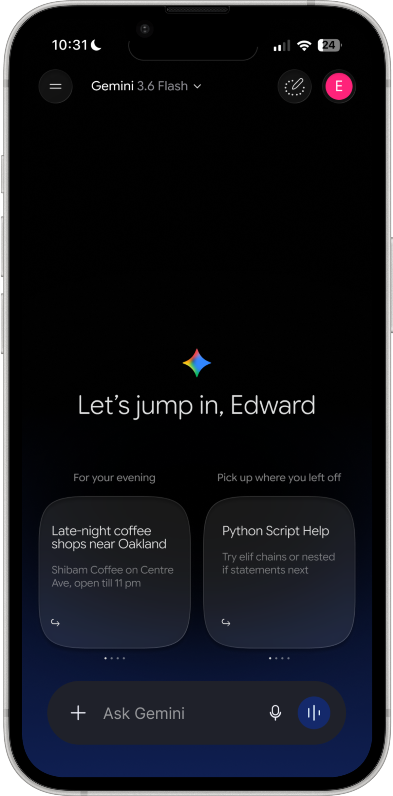
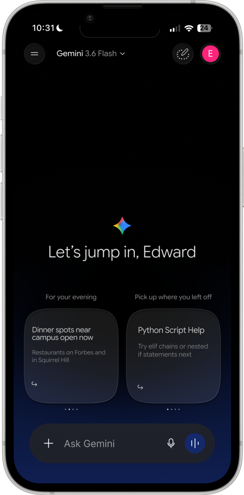
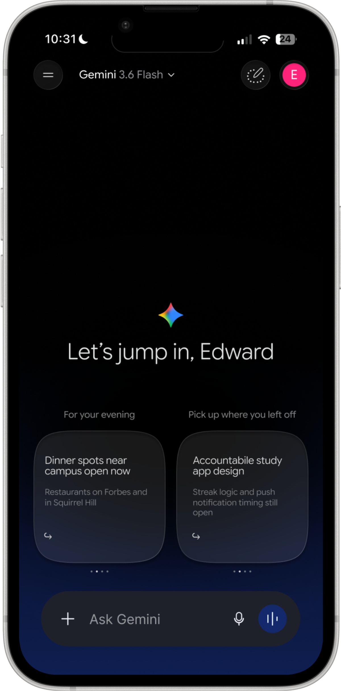
Each stack holds several cards, with dots underneath to show how many. They change one at a time, so the screen never shifts all at once: here coffee turns to dinner, then the Python chat to the study app project.
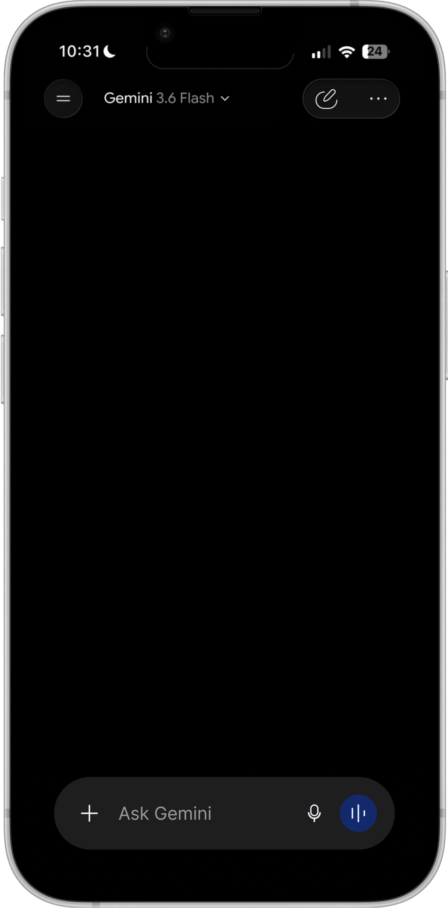
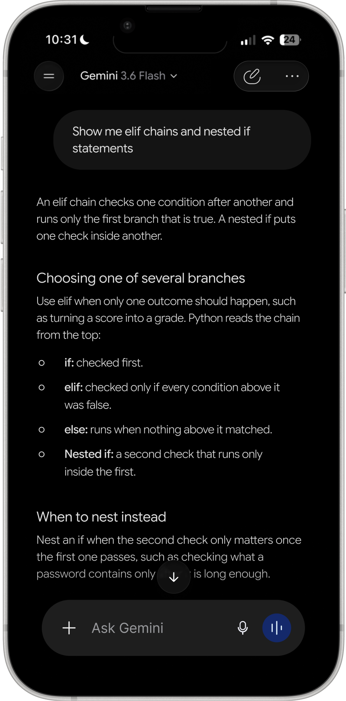
Tapping it reopens the Python chat and sends the next step the card suggested, so Gemini answers where you left off.
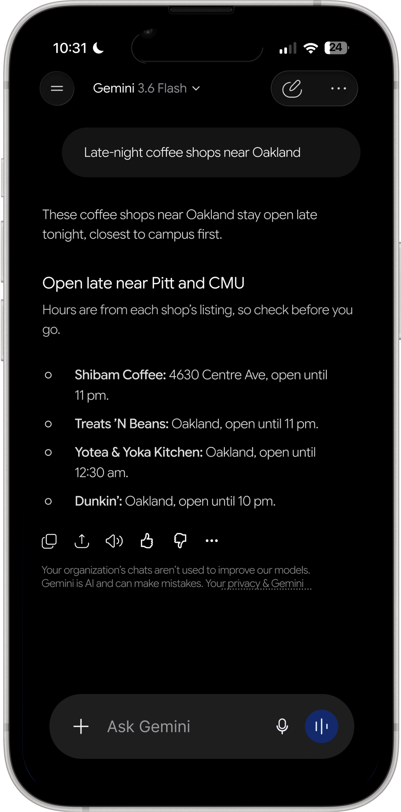
Tapping it starts a new chat with the question already sent, and Gemini answers with places near campus that are open late.
Rebuilding Gemini first was worth it: only at full size could I tell which empty space was deliberate. Two parts are still open.
Nothing yet says what happens when a suggestion misreads the time, place or task. In a study of coding assistants, a third of proactive suggestions went ignored.
The stacks use your location and recent chats. Nothing yet shows you that, or lets you turn it off.
Sources: Pu et al., CHI 2025, 18 participants.